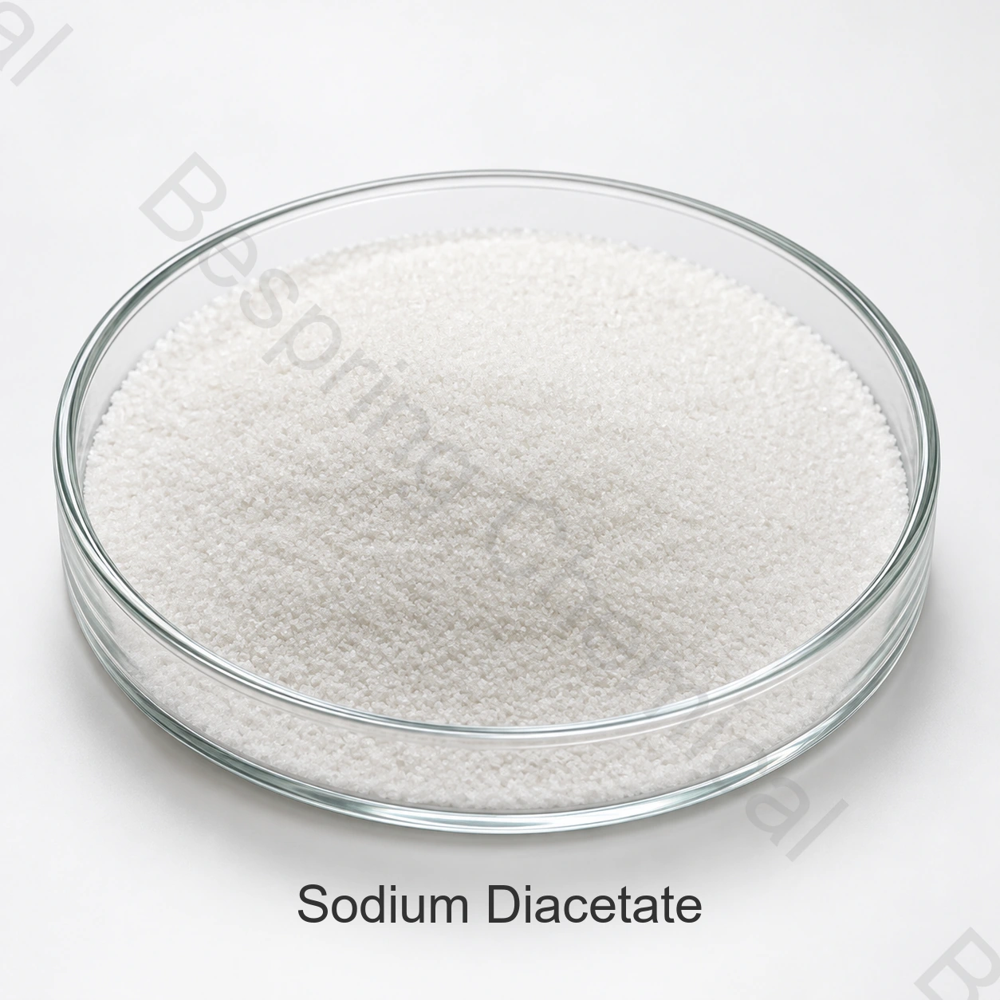

Lebensmittelqualität · E262(ii) / INS 262(ii)
Natriumdiacetat in Lebensmittelqualität (E262(ii))
Natriumdiacetat ist ein Komplex aus Natriumacetat und Essigsäure. In zugelassenen Lebensmitteln kann es als Säureregulator, Konservierungsstoff und trockene Quelle einer Essignote dienen.
- Produkt
- Natriumdiacetat in Lebensmittelqualität (E262(ii))
- CAS
- CAS 126-96-5
- Identifikation
- E262(ii) / INS 262(ii)
- Formel / Referenz
- CH₃COONa
Nennen Sie Anwendung, Spezifikation, kritische Grenzwerte, Menge, Verpackung und Zielort.

QualitätLebensmittelqualität, vorbehaltlich Quellenqualifizierung
VerpackungGebindeart, Nettogewicht und Palettierung abstimmen
LieferungKalkulation nach Menge, Zielort und Incoterm
ChargennachweisAktuelle Spezifikation und Chargen-COA
Technische Kurzantwort
Produktidentität und Spezifikation
Natriumdiacetat ist ein Komplex aus Natriumacetat und Essigsäure. In zugelassenen Lebensmitteln kann es als Säureregulator, Konservierungsstoff und trockene Quelle einer Essignote dienen.
Für einen industriellen Einkauf reicht der Handelsname nicht aus. Fordern Sie die aktuelle Herstellerspezifikation, Prüfmethoden, ein Muster-COA und das Analysezertifikat der Charge an. Die Konformität ist für die konkrete Anwendung, den vereinbarten Standard und den Absatzmarkt des Lebensmittels zu bewerten.
Funktion im Lebensmittel
Wesentliche Funktionen
Unterstützung mikrobiologischer Hürdensysteme
Essigähnliches Geschmacksprofil
Trockener Bestandteil validierter Konservierungssysteme
Anwendungsprüfung
Zu prüfende Anwendungen
Snacks und Würzmischungen
Backwaren
Verarbeitete Fleischwaren
Saucen, Marinaden und Fertiggerichte
Die Anwendungen sind Orientierungshilfen, keine allgemeine Zulassung oder Dosierungsempfehlung. Technische Eignung, Höchstmenge und Kennzeichnung im Endprodukt sind zu prüfen.
Leitfaden zur Qualifizierung
Auswahlkriterien für den B2B-Einkauf
Verhältnis von Natriumacetat zu freier Essigsäure
pH, Feuchte, Geruch und Fließfähigkeit
Partikelform und Verteilung im Premix
Mikrobiologische, sensorische und rechtliche Prüfung des Endprodukts
Die konservierende Wirkung hängt von pH, Wasseraktivität, Prozess, Verpackung und weiteren Hürden ab. Eine Dosierung allein belegt weder Haltbarkeit noch mikrobiologische Sicherheit.
Dokumentation und Lieferung
Dokumentation, Verpackung und Logistik
Für die Lieferantenfreigabe sollten eine unterzeichnete Spezifikation, TDS, Sicherheitsdatenblatt, Muster-COA, regulatorische Erklärungen und gültige Zertifikate angefordert werden. Bestätigen Sie Nettogewicht, Verpackungs- und Inlinermaterial, Palettierung, Kennzeichnung, Haltbarkeit, Lagerung, Zielort und Incoterm.
Unabhängige Fachquelle
Unabhängige technische Referenz
Nutzen Sie die angegebene offizielle technische Referenz zur Prüfung von Identität und regulatorischem Kontext. Maßgeblich bleiben die vertragliche Spezifikation und das geltende Recht des Zielmarktes.
Fragen aus dem Einkauf
Häufig gestellte Fragen
Welche Angaben werden für ein Angebot benötigt?
Nennen Sie Anwendung, Standard, kritische Grenzwerte, Jahres- und Liefermenge, Verpackung, Zielort, Incoterm, Zertifikate und Bedarfstermin. So lassen sich technisch vergleichbare Angebote erstellen.
Wie wird Lebensmittelqualität bestätigt?
Prüfen Sie die Spezifikation des konkreten Herstellers, die Dokumente des Qualitätssystems, anwendbare Erklärungen und das Chargen-COA. Der Produktname allein belegt keine Lebensmittelqualität.
Ist das Produkt in jedem Lebensmittel und jedem Land einsetzbar?
Nein. Lebensmittelkategorie, Funktion, Höchstmenge und Kennzeichnung sind nach dem geltenden Recht des Zielmarktes zu prüfen.
Beschaffung nach vereinbarter Spezifikation
Angebot für Natriumdiacetat in Lebensmittelqualität (E262(ii)) anfordern
Teilen Sie uns Anwendung, Zielstandard, kritische Grenzwerte, Menge, Verpackung, Zielort und benötigte Unterlagen mit.